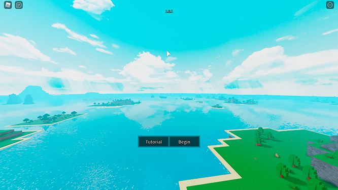
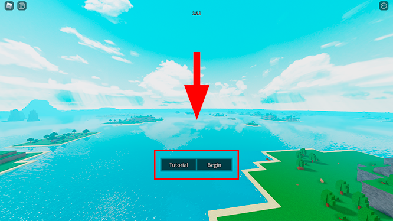

BEGINNINGS - Guia
O que é o Beginnings?

Beginnings é um jogo de aventura de mundo aberto que se encontra na plataforma de jogos Roblox. Neste jogo você tem como principal objetivo sobreviver. E para isto você irá precisar ir atrás de recursos. No beginnings você escolhe seu próprio caminho, então você pode ser um simples fazendeiro ou um explorador ou um lider de uma facção que pode dominar o continente, e entre muitas possibilidades.
O Mapa do jogo é composto por um continente com um oceano cheio de ilhas, algumas grandes, outras pequenas, mas o mapa nunca é o mesmo. Cada servidor tem um mapa diferente, mas em todos eles sempre tem algumas ilhas em comum, Alguns exemplos são os Vulcões, os Desertos e as Ilhas Principais (As maiores ilhas do jogo).
Primeiros passos
Ao entrar no jogo você irá se deparar com uma tela igual a esta.
Você tem duas opções nesta tela, ir para o tutorial clicando no botao "Tutorial", lá você irá aprender um pouco sobre o jogo e isso vai te ajudar muito, pois vai te dar uma base sobre o jogo, ou você pode clicar em "Begin" e começar a jogar o jogo de verdade. Por mais que aqui vai ter um guia sobre o jogo, eu recomendo que você faça o tutorial, para ter certeza que você não irá ficar perdido.
